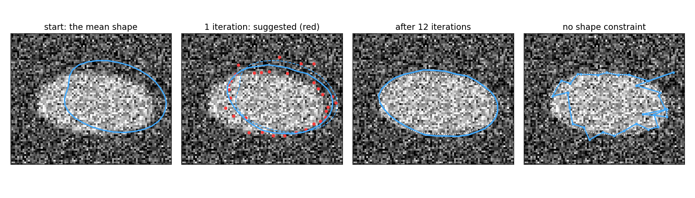

A snake moves its points towards edges and keeps them smooth. An active shape model (Cootes, Taylor, Cooper & Graham, 1995) also moves its points towards the image, and then pulls the whole set back to the nearest plausible shape of a trained model.
Profiles along the normals: what the image looks like across the boundary, at each landmark.
The search loop: suggest points, fit the pose, project onto the modes, clamp, repeat.
What the shape constraint buys: robustness to noise, occlusion and clutter.
Coarse to fine on an image pyramid: a larger capture range.
Snake or shape model: when to use which.
Slides titled The math give the formulas and proofs; the ideas are complete without them.
The idea

Start: the mean shape of the model, placed roughly over the object.
Each landmark looks along its normal for a better position (red). Alone, these suggestions are noisy and some are wrong.
Then the model finds the plausible shape closest to the suggestions. Repeat: after 12 iterations the outline fits.
Right: the same suggestions without the shape model: the points follow the noise and the outline falls apart.
Looking along the normal
At each landmark, sample the image along a short line perpendicular to the outline (the normal), a few pixels inside and outside: a profile.
Simplest rule: move the landmark to the strongest edge along the normal (as a snake’s image force would, but searching instead of sliding).
Better: learn from the training images what the profile should look like at this landmark (dark-to-bright, a thin dark line, a ramp), and move to the position whose profile matches best.
Search a few pixels each way, m, with a profile of half-length k < m: try each offset, keep the best.
A profile by hand
Model profile at a landmark (3 samples of the derivative): (0.3, 0.5, 0.2). Profile sampled along the normal, offsets -4 to 4:
offset
−4
−3
−2
−1
0
1
2
3
4
derivative
0.0
0.6
0.0
0.1
0.3
0.5
0.2
0.0
0.1
Strongest edge: the largest value, 0.6 at offset -3.
Profile match: slide the 3-sample model over the profile and add the squared differences. Centred at -3: (0 - 0.3)^2 + (0.6 - 0.5)^2 + (0 - 0.2)^2 = 0.14. Centred at +1: (0.3 - 0.3)^2 + (0.5 - 0.5)^2 + (0.2 - 0.2)^2 = 0. Best: offset +1.
A single strong spike (clutter, a neighbour’s edge) wins the strongest-edge rule; it does not look like the trained profile.
The math: the profile model
At landmark j of every training image, sample 2k + 1 points along the normal, take differences (derivative), normalise by \sum|g| (insensitive to contrast): a vector \mathbf g \in \mathbb R^{2k+1}.
Over the training set: mean \bar{\mathbf g}_j and covariance S_j (per landmark, per pyramid level).
Fit of a candidate profile: the Mahalanobis distance
d(\mathbf g) = (\mathbf g - \bar{\mathbf g}_j)^\top S_j^{-1}(\mathbf g - \bar{\mathbf g}_j).
If profiles were Gaussian, d is -2\log likelihood plus a constant: the best offset is the most probable profile. With S_j = \sigma^2 I it is the sum of squared differences of the slide before, divided by \sigma^2.
S_j is estimated from few samples: regularise it (S_j + \varepsilon I) before inverting.
The search loop
Start with the mean shape \bar{\mathbf x}, placed at a rough position, size and angle (the poseT).
Suggest: for every landmark, search along its normal for the best offset: suggested points \mathbf Y.
Pose: fit position, size and angle of the current model shape to \mathbf Y (Procrustes, previous unit).
Project: undo the pose on \mathbf Y and find the model parameters \mathbf b closest to it.
Clamp: limit each |b_j| \le 3\sqrt{\lambda_j}. The new shape is the model shape with these \mathbf b, in this pose.
Repeat until few points move.
Step 2 alone is a snake without internal forces. Steps 3–5 replace \alpha and \beta by learnt knowledge: not “be smooth” but “look like the training shapes”.
The math: pose and shape parameters
The model shape in the image: X = T(\bar{\mathbf x} + \Phi\mathbf b), with T the similarity \mathbf p \mapsto \begin{pmatrix} a & -b \\ b & a\end{pmatrix}\mathbf p + \mathbf t.
Pose: Procrustes of \bar{\mathbf x} + \Phi\mathbf b onto the suggested points \mathbf Y gives (a, b, \mathbf t).
Project: \mathbf y = T^{-1}(\mathbf Y), \mathbf b \leftarrow \Phi^\top(\mathbf y - \bar{\mathbf x}): the least-squares closest shape in the model frame.
Clamp: b_j \leftarrow \max(-3\sqrt{\lambda_j}, \min(3\sqrt{\lambda_j}, b_j)). Or, with a Mahalanobis limit, scale \mathbf b down when \sum_j b_j^2/\lambda_j > D_\text{max}^2.
Cootes et al. alternate pose and shape a few times per iteration and project \mathbf y into the tangent space of the mean; one pass works well in practice.
Try it: active shape model search
What the shape constraint buys
Noisy image, 10 px / 10° start, 12 iterations (RMS distance of the landmarks to the truth):
start
ASM
suggestions only (no constraint)
noise 0.25
11.8 px
2.9 px
10.5 px
occluding bar
11.8 px
3.6 px
11.1 px
Wrong suggestions (noise, a bar across the object, clutter) are a minority: the pose and the few mode parameters are fitted to all landmarks at once, so the majority wins.
Where the edge is missing (occlusion), the model fills in the outline from what nuclei look like, instead of bridging with a straight line.
Coarse to fine
The search only looks m pixels each way: a far start does not see the object. The same idea as a large \sigma for snakes:
Build a Gaussian pyramid: blur and halve the image, two or three times (the edges day, scale space).
Train a profile model at each level. Search the coarsest level first: m = 6 pixels there are 24 pixels at full size (two halvings). When few points move, go one level finer.
Larger capture range, and faster: the coarse levels have few pixels and few iterations.
Far start (22 px, 20°): one level ends 20.3 px off; two levels 1.2 px; three levels 0.6 px.
Snake or shape model?
snake
active shape model
prior knowledge
smooth, short
the shapes in the training set
training data
none
annotated examples with landmarks
noise, clutter, occlusion
wanders, bridges with straight lines
robust; fills in from the model
unusual shape
follows it
cannot: clamped to the model
result
an outline
an outline with landmarks and parameters \mathbf b
Applications: outlines of hands, bones in radiographs, the heart’s ventricles, faces, nuclei and cells in microscopy. Today’s networks that detect landmarks are often still regularised by a point distribution model.
Beyond: appearance models
Active appearance models (Cootes, Edwards & Taylor, 1998): warp each training image to the mean shape, do PCA on the grey levels too, and fit shape and appearance together.
3D shape models: meshes instead of polygons (organs from CT or MRI; marching cubes produces such meshes); the same Procrustes and PCA in \mathbb R^{3n}.
Shape priors inside graph cuts and level sets: the energy gets a term “look like the model”.
Summary
An ASM = a point distribution model + a profile model per landmark (and per pyramid level).
Loop: suggest points along the normals → fit the pose → project onto the modes → clamp|b_j| \le 3\sqrt{\lambda_j}.
Profile matching by Mahalanobis distance to the trained profile beats the strongest edge.
The constraint makes the search robust to noise and occlusion, and coarse to fine extends its reach.
It cannot follow shapes the training set never showed: then a snake does better.